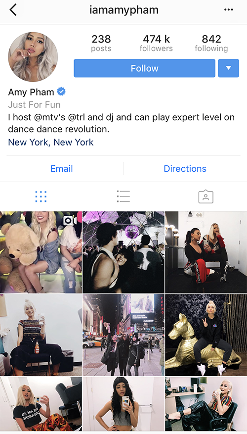
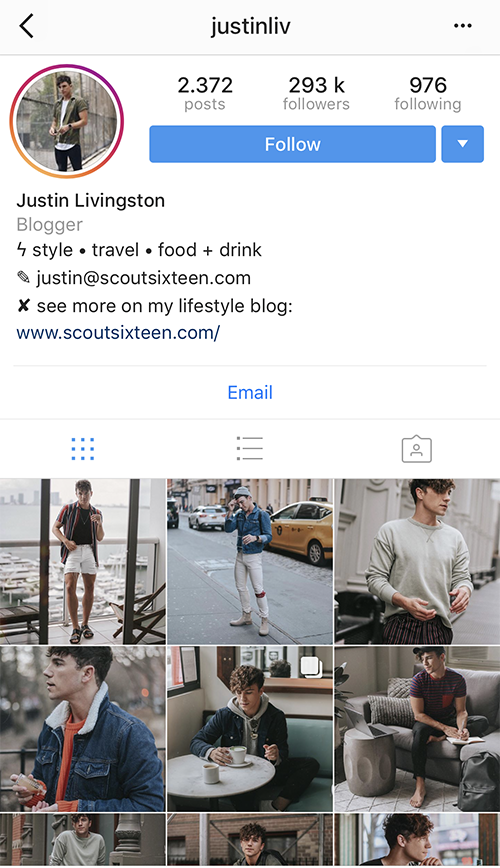
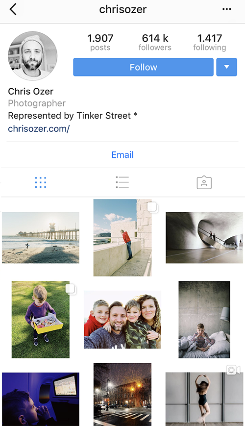
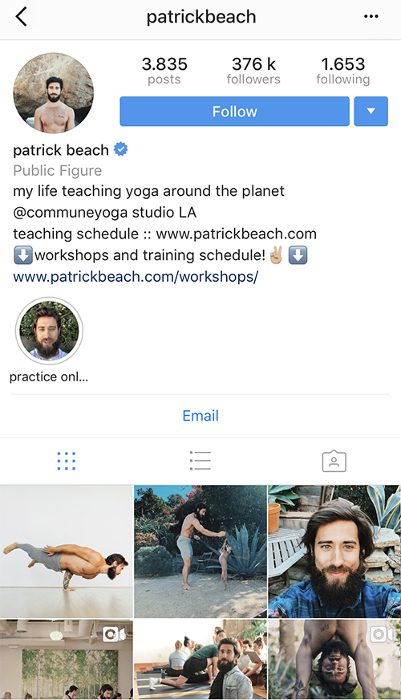

If you’ve already gotten yourself around to using Instagram, you’ve probably used browsing through your brands’ hashtags, stalking rival account holders or those influential and popular Instagrammers. You’ll also have realized that it basically functions as an image-based discovery platform. As for your own audience, having the ability to take a quick glance at a few pictures and snap a judgment straight from that is both enticing and exciting. Ultimately, Instagram is really all about sharing photos of yourself or your brand to capture the imaginations of others.
However, one thing that will hold you as an amateur Instagram user is the fact that, other brands and people have a less committed process on this platform. They don’t need to follow long newsfeeds, it’s usually just a single photo then on to the next. This makes the probability of them unfollowing your account that much easier when the posts no longer meet their needs.
So here are some tips from popular Instragrammers, to help give you hand on keeping your Instagram feed afloat.
#1 Amy Pham LA-based DJ and model with about 474K Followers

One of the well stalked popular Instagrammers. Her number one tip is to “Make an impression”. Since Instagram is clearly all about imagery, there’s always room for those spontaneous photos. However, they can’t just be completely spur of the moment, they need to be somewhat planned and styled to look that way. It’s your goal to make your image have the power to move, connect and persuade your audience. After all, a picture is worth a thousand words, and those words can speak a lot about you and your branding. Just remember that it’s not always about behind the scenes or spontaneous shots, you also have to take the time to mould your Instagram feed for those popular Instagrammer rewards.
#2 19-year-old Gigi Crouch, famous ballet dancer known to have overcome Scoliosis
One of the popular Instagrammers since 2014, hosts a feed full of gorgeous dance. Her go-to tip on how she has maintained such a large following on Instagram is “Keeping personality first”. From experience, her can-do attitude and talent have attracted brands like Label Dancewear, and everyone loves how she does her best to serves as an inspiration for other girls. If you didn’t know it yet, Instagram has more than 35 million selfies, clearly making it a social platform based on personality.
Alone your brand’s account can gain over 800 followers on a single photo if there is enough personality in your photo.
As a marketer, you have to make sure the personality of your brand is what stands out. So, ensure that the photos you take, are promotional but stay true to the brand. Promote your brand to your audience, but don’t forget to make them feel like they are part of your day-to-day life.
#3 Justin Livington

He once dreamed of being a fashion guru living in the city. He is now one of the most popular Instagrammers you’ll find on Instagram. His tip for being one of the popular Instagrammers is that you have to “Have a consistent voice”. Use your feed to showcase your brand and what it has to offer. It should revolve around a conceptualized theme and should tell a story like how you as a marketer would. Use it effectively, and it will drive traffic to your feed.
At the age of 25, Justin never would have expected that posting photos of his outfits would become a reality dream job. Now he gets paid by brands like Ralph Lauren and Armani Exchange to attend forums and galas wearing their line of products.
#4 Chris Ozer

Chris is a photographer who left his music career in jazz and piano to follow his love for photography. This articulate Instagrammer has an amazing following of 614k followers. Since finding his passion for photos and deciding to make a living out of it, he’s been connected to brands like Nike, Cole Haan, TOMS and so many more. He’s made a career of working in the “Big League” of advertisers. His best advice as a popular Instagrammer would be to take charge of “The art of revenue”. This will get your audience to not just check out your brand but really notice it. You have to master the art of product promotion and how it goes hand in hand with revenue. Sure your feed can be about editorial photos and tagging your brand, but when a company like Johnnie Walker decides to choose you to document for them, it’s not just your Instagram feed that gets a kick out of the experience.
#5 Patrick Beach

Patrick and his partner, Carling Harps, are not just popular Instagrammers, they are also yoga teachers and adventurers. They hold one of the largest ranking numbers of followers for a duo with a travel and lifestyle feed. They basically document their travels, streetwear and yoga practices, with a unique twist inversion. Their go-to tip for being like the popular Instagrammers is to “Optimize to appear on the Explore Page”. Every brand or person on Instagram has and if not, should have the dream of being featured on Instagram’s Explore Page. Being there not just guarantees a boost with your followers and audience, it’s the sign that you’ve made a name for yourself on this social platform. However, arriving there can be quite the challenge. There is always a lot of competition and Instagram also has a “special formula” that helps determine which pictures are chosen to be featured on the Explore page. When in doubt think travel, food, fashion, and lifestyle, or any of the many favorites of the Instagram community.
Wrapping it up
As a marketer knowing why this social platform has been so successful is just the half of it. The main key to figuring it all out is to really understand how to leverage yourself with it, and no one can do that better than your influencers or those popular Instagrammers. As an online marketer, your priority is to maintain the brand and its voice. Even with all the competition, you have to consistently produce good content and showcase your brand the way it needs to be showcased.
When working with top popular Instagrammers, it’s helpful to know when the influencers notice the highest levels of potential social engagement. This means that timing is everything, in order for you to maximize exposure and the reach of your marketing campaign, engagement must always be high.
Tara says
Thanks for mentioning these profiles, they are quite interesting. There are so many influencers that are doing a really good job and some famous brands should look up to them.
Darcie says
Interesting stuff 🙂 I like to see profiles that have some interesting story and a good purpose. When they have some kind of mission they are trying fulfill with their actions. There are some influencers that are doing both good for people following them and also earning good money at the same time.
Donald says
We often collaborate with influencers from our niche and they really know what they are doing. Even we learned some things from them. But I would agree with what one of the listed users said, you should always use the situation and make an impression.
Omar Cadiz says
Thank You very much for such an inspiring article, I really liked it, thanks again for sharing
Gael Lumbar says
I think that, besides the talent, the perfect product we have, luck is the crucial thing. God’s willing, destiny, I don’t know how to name it, is the crucial thing.
Jack Jilland says
Wow, thanks for this wonderful article, it really opened my eyes and it made my day better 🙂